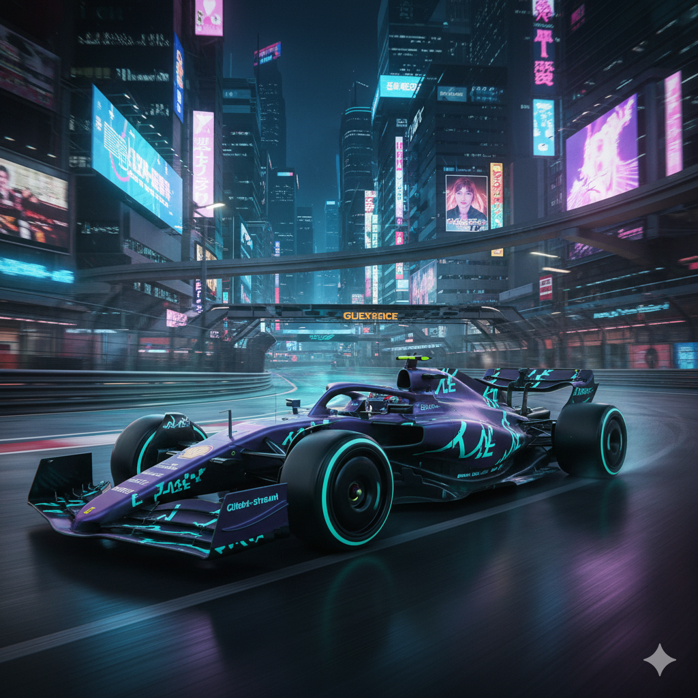

The Future is Fast [cite: 1]
Welcome to the home of the grid's new high-technology disruptor. [cite: 1]
About The Team
Welcome to Neon Flux Racing (NFR), the data-driven corporation crashing onto the Formula 1 grid. [cite: 1, 2] We are here to redefine performance. [cite: 2] Our mission is to fuse superior technology with an unapologetically aggressive style to win championships. [cite: 3] As a new Midfield Contender, our immediate goal is to out-develop rivals through smarter management and a more aggressive upgrade path. [cite: 14, 18]
Our Drivers: Experience Meets Potential [cite: 22]
Bottas (The Veteran) [cite: 23]
As the team's anchor, Bottas is tasked with delivering reliable points finishes. [cite: 23] His high awareness and consistent feedback are invaluable assets for accelerating car development. [cite: 23]
Pourchaire (The Rookie) [cite: 23]
Representing the future of NFR, Pourchaire brings raw speed and immense potential. [cite: 23] He is the team's long-term investment to be transformed into a championship-winning force. [cite: 23]
The NFR-01 Challenger
Our 2025 challenger is powered by a Ferrari engine, providing a superior balance of power and reliability. [cite: 16] This allows our R&D to focus on our core strengths in chassis and aerodynamics. [cite: 17] The car features the "Glitch-Stream Livery," where sharp, angular teal decals streak across the matte purple bodywork, simulating digital data streams breaking apart at speed. [cite: 11]